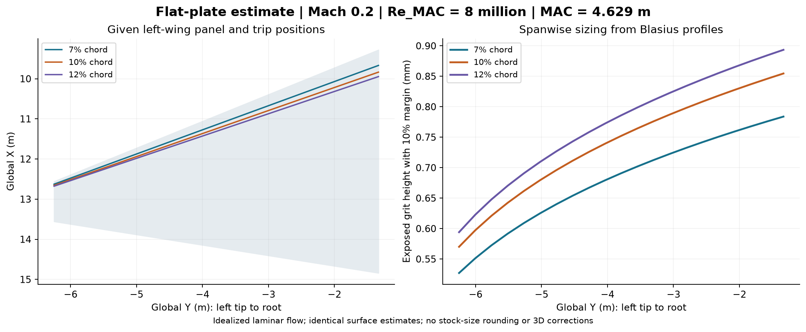

Idealized Blasius laminar profiles, Re_k=600, 10% height margin, k/delta99 cap 0.8. Heights are exposed protrusion above the surface. No stock-size list is assumed. All dimensions are treated as physical test-model dimensions.
MAC 4.629 m and Re_MAC 8 million give unit Reynolds number 1,728,235.04 /m. Leading-edge sweep is 33.682 degrees. Upper and lower values coincide solely because the same zero-pressure-gradient assumption is used for both; actual angle-of-attack, wingtip, root-junction and crossflow effects are absent.

| Y (m) | Chord (m) | 7% chord height (mm) | 10% chord height (mm) | 12% chord height (mm) |
|---|---|---|---|---|
| -1.33300 | 5.560 | 0.783789 | 0.854549 | 0.893388 |
| -2.56225 | 4.420 | 0.741726 | 0.808258 | 0.844808 |
| -3.79150 | 3.280 | 0.690855 | 0.752180 | 0.785918 |
| -5.02075 | 2.140 | 0.625096 | 0.679460 | 0.709457 |
| -6.25000 | 1.000 | 0.527057 | 0.570073 | 0.594054 |
| Position | Minimum (mm) | Cap from tip (mm) | Interval width (microns) |
|---|---|---|---|
| 7% | 0.783789 | 0.790530 | 6.74 |
| 10% | 0.854549 | 0.944864 | 90.32 |
| 12% | 0.893388 | 1.035046 | 141.66 |
The 7% interval is only about 6.74 microns wide; 0.80 mm exceeds its tip cap. It is sensitive to profile assumptions: the tool's simpler Thwaites/quartic reconstruction gives no uniform feasible interval at 7%. Treat the spanwise heights as preliminary estimates.
The given exposed panel area is 16.12776 m2 and its trapezoidal MAC is 3.80829 m. The supplied reference area 49 m2 and MAC 4.629 m are retained; reference area does not enter this local roughness calculation. Absolute Y coordinates are preserved.
All 21 span stations at each position | Uniform-height intervals | Profile-model sensitivity
Detailed reports: 7% chord | 10% chord | 12% chord
Criterion reference: NASA TN D-3579.